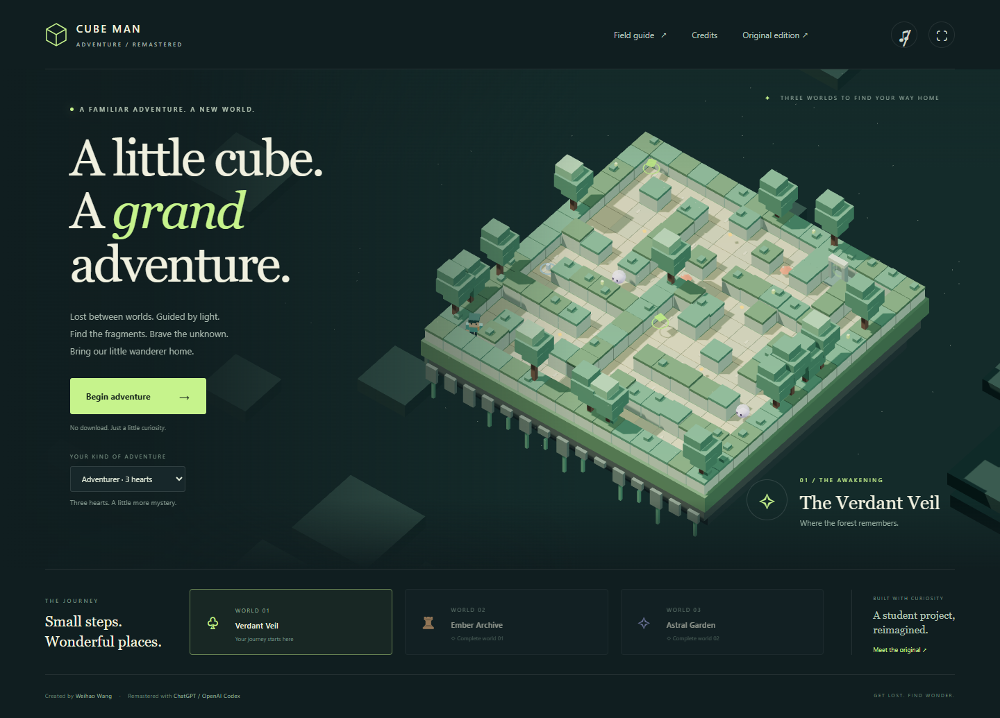

One adventure.
Two chapters.
Every project starts somewhere. This one started with a student, a cube, and a little curiosity. Keep a memory of the beginning, or step into a whole new world.

THE ORIGINAL / PRESERVED
Where it all began.
The original Interactive Graphics student project by Weihao Wang, kept exactly as it was.
Play the original →
THE REMASTER / A NEW JOURNEY
A little cube. A grand adventure.
Three worlds, fragments of light, and a way home. Reimagined with ChatGPT / OpenAI Codex.
Play the remaster →